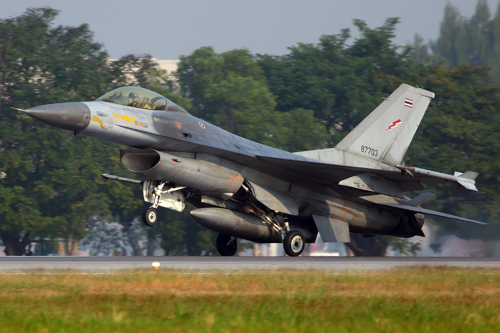

LOCKHEED MARTIN
F-16 Fighting Falcon
A single-engine multirole fighter known for its agility and broad range of mission options. The RTAF has operated F-16 variants for decades.
At a glance
Role: multirole fighter
Design: single engine, single seat in common configurations
Note: specific equipment varies by variant and upgrade.